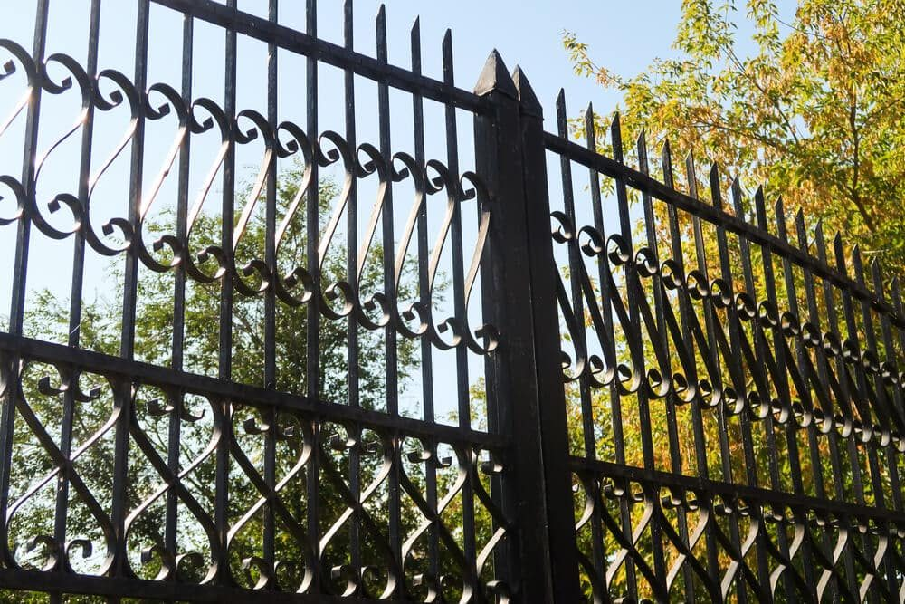

In This Guide
- There is no single fence height that is allowed everywhere. Your city or parish sets the rules, and an HOA may add stricter ones.
- Five steps will find the rules that apply to your address: local office, HOA, property lines, permit check, and written confirmation.
- Front yards are commonly held to lower heights than side and rear yards. Treat the ranges here as general guidance, not a legal limit.
- Building without checking can mean fines or taking the fence down, so confirm the rules before you sign anything.
Before any fence goes up, one question comes first: how tall is allowed? The answer depends on where you live, which part of the yard the fence sits in, and whether a neighborhood association has a say. This guide shows you how to find the rules for your address and what height ranges homeowners commonly run into.
Big Easy Fence works on residential fences across the area, and the honest answer to this question is that no single number covers all of Louisiana. Rules come from your city or parish and are often tightened by an HOA. Nothing on this page is a legal limit. Think of it as a map for finding yours.
Why Fence Height Rules Differ From Place to Place
Fence height is a zoning matter, and zoning is local. Two homes a few miles apart can be governed by different offices with different limits. Several layers can apply to the same fence at once.
City or Parish Zoning
Your city or parish usually sets the base rules for how tall a fence can be, where it can sit, and whether it needs a permit. These often differ by zoning district and by yard area, so a fence that is fine at the back of the lot may not be allowed at the front.
HOA and Neighborhood Covenants
If your street has a homeowners association, its covenants can be stricter than the city or parish. Some associations limit height, restrict materials or colors, or require approval of the design before you build. City approval does not replace HOA approval, and the reverse is also true.
Historic Districts and Special Areas
Homes in a historic district, or next to a park, a canal, or a public right of way, may face extra review. Ask about it early, because design review can add time before work can start.
How to Find the Rules for Your Address
You do not need to read a whole zoning code. These five steps get you to a confirmed answer.
Step 1: Contact Your Local Permitting or Zoning Office
Call or visit the office that covers your address. Ask what height limits apply to fences in the front, side, and rear yards, whether a permit is required, and what the permit needs. Ask for the answer in writing or a link to the exact rule.
Step 2: Read Your HOA Covenants
Pull the covenants, rules, and architectural guidelines for your community. Look for fence sections covering height, materials, colors, and approval steps. If anything is unclear, ask the association or its management company.
Step 3: Confirm Your Property Lines
Height rules are measured from your lot, so you need to know where it ends. A recent property survey settles boundary questions. Also ask about easements, which Louisiana law often calls servitudes, because utilities may have a right to cross part of your yard.

Step 4: Ask About the Permit Process
Some places require a permit for every fence, some only above a certain height, and some only for certain locations. Ask what documents they want, such as a site plan showing where the fence will run. A contractor can prepare that, but the requirement comes from your local office.
Step 5: Get the Answers in Writing
An email or a printed page from the office beats a phone memory. If the rules change or a neighbor questions the fence later, that record protects you.
Common Height Ranges by Yard Area
Local rules vary, but the same pattern shows up in many places: lower fences toward the street, taller fences toward the back. The ranges below are general guidance for planning a conversation with your city or parish. They are not limits you can rely on, and yours may be lower or higher.
Front Yards and Street Sides
Fences near the street or sidewalk are commonly kept low, often in the range of about 3 to 4 feet. The reasons are visibility for drivers and pedestrians and a consistent look along the block. Open styles such as picket or wrought iron fencing are common choices here because they keep sight lines clear.
Side and Rear Yards
Side and back yards are usually allowed to go taller, commonly around 6 feet, and some places allow a little more under certain conditions. That height supports privacy and keeps pets and children in the yard. Many places set the ceiling lower than the top of that range, so treat the upper end as a question to ask, not an expectation.
Corner Lots and Driveways
Corner lots often get their own sight-triangle rules near the intersection, and the areas beside driveways may be limited for the same reason. If your lot sits on a corner, ask the local office about it directly, because a fence that works on a mid-block lot may need to be lowered or set back here.
Ask whether height is measured from the ground on your side or the neighbor's side, and whether posts, caps, and decorative tops count. On uneven ground, that answer can change how tall the fence is allowed to be.
What Can Raise or Lower the Limit
The base rule is only part of the picture. A few details can push a fence over the line even when the panels themselves look compliant.
- Retaining walls and raised beds. A fence set on top of a wall may be measured from the bottom of the wall, so the total height counts.
- Decorative posts and toppers. Lattice, finials, and post caps can count toward the total in some places and not in others.
- Pools and other safety areas. Fences around pools often follow separate barrier rules, so ask your local office before assuming a standard fence will qualify.
- Setbacks. Some places require a fence to sit a set distance back from the property line or the street, which changes where the height limit applies.
Factors such as purpose, slope, and gates also shape the height you actually want, which we cover in our guide to how high a residential fence can be.
What Happens If You Skip the Check
Building without confirming the rules is one of the most expensive mistakes in fencing. Depending on where you live, the outcome can include a fine, a stop on the work, or an order to shorten or remove the fence. An HOA can require changes on its own timeline as well. Paying for the same fence twice is a far bigger cost than a phone call at the start.
It also helps to talk with the neighbors on either side before you finalize the plan. A tall fence changes their view and their sunlight, and a friendly heads-up avoids disputes that no zoning office will settle for you.
Next Steps Before You Build
Pick a rough height, confirm it with your city or parish and your HOA, and get that confirmation in writing. Then you can choose a style with confidence. If you are still deciding on a material, our guide to the best type of fence for your home walks through the options by need. Local homeowners can also see the areas we serve and start a conversation about a fence that works within your local rules.
Ready to Plan a Fence That Fits the Rules?
Share your address and the look you want, and we will help you work out a height to confirm with your city or parish and HOA.